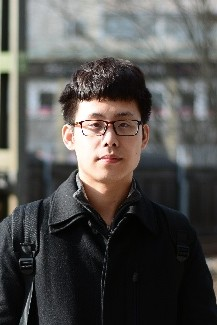

|
Yiping Xie
|
 |
Ph.D. Student
Division of Robotics, Perception and Learning
Royal Institute of Technology (KTH)
Google Scholar LinkedIn
Contact:
Address: Lindstedtsvägen 24, 10044 Stockholm, Sweden
E-mail: yipingx [at] kth [dot] se
|
Biography
I am a Ph.D. student at Division of Robotics, Perception, and Learning, EECS School, KTH under the supervision of Prof. John Folkesson and Dr. Nils Bore, employed by Wallenberg AI, Autonomous Systems and Software Program (WASP).
My research interests are Marine Robotics, 3D Computer Vision and Deep Learning. My current research focuses on 3D reconstruction from imaging sonars and underwater Simultaneous Localization and Mapping (SLAM).
What's New
(06/2024) I am defending my Ph.D. thesis on June 5th 2024!
(08/2023) I have received the scholarship through WASP PhD student exchange program for a 4.5 months visit to Monterey Bay Aquarium Research Institute (MBARI), California, hosted by Dr. Giancarlo Troni!
(01/2023) Our paper “Data-driven Loop Closure Detection in Bathymetric Point Clouds for Underwater SLAM” has been accepted at IEEE International Conference on Robotics and Automation (ICRA). I have presented our poster at London, 06/2024.
(10/2022) Our paper "Bathymetric Reconstruction From Sidescan Sonar With Deep Neural Networks" has been accepted by IEEE Journal of Oceanic Engineering.
(07/2022) Our paper "Neural Network Normal Estimation and Bathymetry Reconstruction from Sidescan Sonar" has been accepted by IEEE Journal of Oceanic Engineering.
Awards
WASP Research Stints Abroad Scholarship, WASP, 2023
KTH Scholarship, KTH, 2017
Professional Services
Teaching Experience
Teaching Assistant, KTH, Deep Learning in Data Science (DD2424), 2020-2024
Teaching Assistant, KTH, Deep Learning, Advanced Course (DD2412), 2021-2023
Master Students Supervision
Casper Augustsson (main supervisor), KTH, seagrass segmentation using NeRF from multibeam echosounder (MBES) water column data, 2024
Rayan Cali (co-supervisor), KTH, super-resolution MBES mapping using diffusion models, 2024
Oden Allen (main supervisor), KTH, denoising interferometric sidescan sonar (ISSS) data using neural rendering, 2024
Jiarui Tan (co-supervisor), KTH, loop closure detection using PointNet from MBES [ICRA'23], 2023
Weiqi Xu (co-supervisor), KTH, canonical image representation for sidescan sonar [OCEANS'23], 2023
Ivaylo Georgiev (main supervisor), KTH, change detection from SSS using neural rendering, 2023
Zhengjie Ji (main supervisor), KTH, increasing MBES resolution with SSS, 2022
Education
Ph.D. (in progress) in Computer Science, KTH, 2020 - present (advisors: Prof. John Folkesson, Dr. Nils Bore)
M.S. in Information and Networking Engineering, KTH, 2017 - 2019
B.Eng. in Electrical Engineering, Beihang University, 2013 - 2017
Publications
[OCEANS'23] Xu, Weiqi, Li Ling, Yiping Xie, Jun Zhang, and John Folkesson. "Evaluation of a Canonical Image Representation for Sidescan Sonar." In OCEANS 2023-Limerick, pp. 1-7. IEEE, 2023.
[ICRA'23] Tan, Jiarui, Ignacio Torroba, Yiping Xie, and John Folkesson. "Data-driven Loop Closure Detection in Bathymetric Point Clouds for Underwater SLAM." In 2023 IEEE International Conference on Robotics and Automation (ICRA), pp. 3131-3137. IEEE, 2023.
[Journal] Zhang, Jun, Yiping Xie, Li Ling, and John Folkesson. "A Fully-automatic Side-scan Sonar Simultaneous Localization and Mapping Framework." IET Radar, Sonar & Navigation (2023).
[Journal] Xie, Yiping, Nils Bore, and John Folkesson. "Bathymetric Reconstruction from Sidescan Sonar with Deep Neural Networks." IEEE Journal of Oceanic Engineering 48, no. 2 (2022): 372-383.
[AUV'22] Xie, Yiping, Nils Bore, and John Folkesson. "Towards Differentiable Rendering for Sidescan Sonar Imagery." In 2022 IEEE/OES Autonomous Underwater Vehicles Symposium (AUV), pp. 1-6. IEEE, 2022.
[Journal] Xie, Yiping, Nils Bore, and John Folkesson. "Neural Network Normal Estimation and Bathymetry Reconstruction from Sidescan Sonar." IEEE Journal of Oceanic Engineering 48, no. 1 (2022): 218-232.
[AUV'20] Bhat, Sriharsha, Ignacio Torroba, Özer Özkahraman, Nils Bore, Christopher Iliffe Sprague, Yiping Xie, Ivan Stenius et al. "A Cyber-physical System for Hydrobatic AUVs: System Integration and Field Demonstration." In 2020 IEEE/OES Autonomous Underwater Vehicles Symposium (AUV), pp. 1-8. IEEE, 2020.
[Journal] Xie, Yiping, Nils Bore, and John Folkesson. "Inferring Depth Contours From Sidescan Sonar Using Convolutional Neural Nets." IET Radar, Sonar & Navigation 14, no. 2 (2020): 328-334.
|